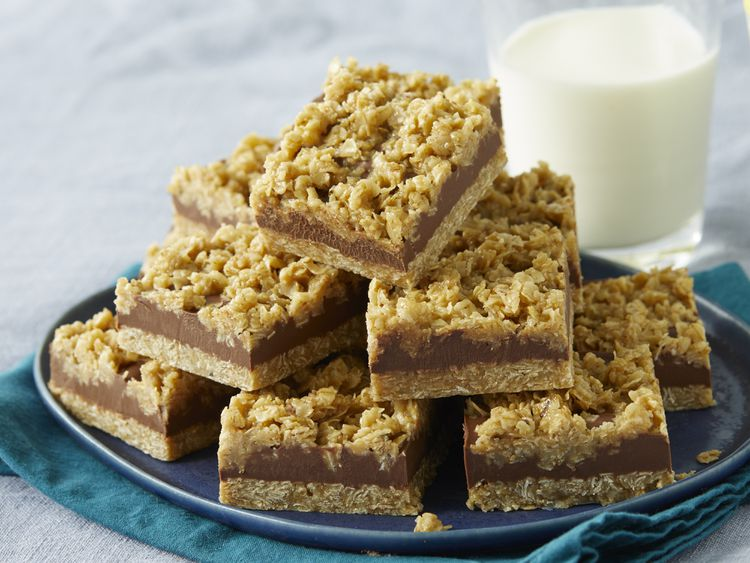

No-Bake Chocolate Oat Bars

Ingredients
- 1 cup butter
- 1/2 cup packed brown sugar
- 1 teaspoon pure vanilla extract
- 3 cups rolled oats
- 1/2 teaspoon ground cinnamon
- 1/4 teaspoon kosher salt
- 1 cup dark chocolate chips
- 3/4 cup chunky peanut butter
Instructions
- Line an 8"-8" baking dish with parchment paper and set aside.
- In a medium saucepan, combine the butter, brown sugar, and vanilla extract. Heat over low heat until the butter
has melted and the sugar has dissolved.
- Add the oats, cinnamon, and kosher salt. Cook, stirring constantly, for 4-5 minutes.
- Pour half of the oat mixture into the prepared baking dish. Spread out the mixture evenly, pressing down.
- In a small microwave-safe bowl, combine the chocolate chips and the peanut butter. Heat on high in the microwave
in increments of 40 seconds, stirring between each increment, until melted and fully combined.
- Pout 4/5 of the chocolate mixture into the pan over the pressed oats, reserving about 1/4 cup for drizzling. Top
with the remaining oats and drizzle with the remaining chocolate mixture.
- Refrigerate for 4 hours or until set.
- Enjoy.